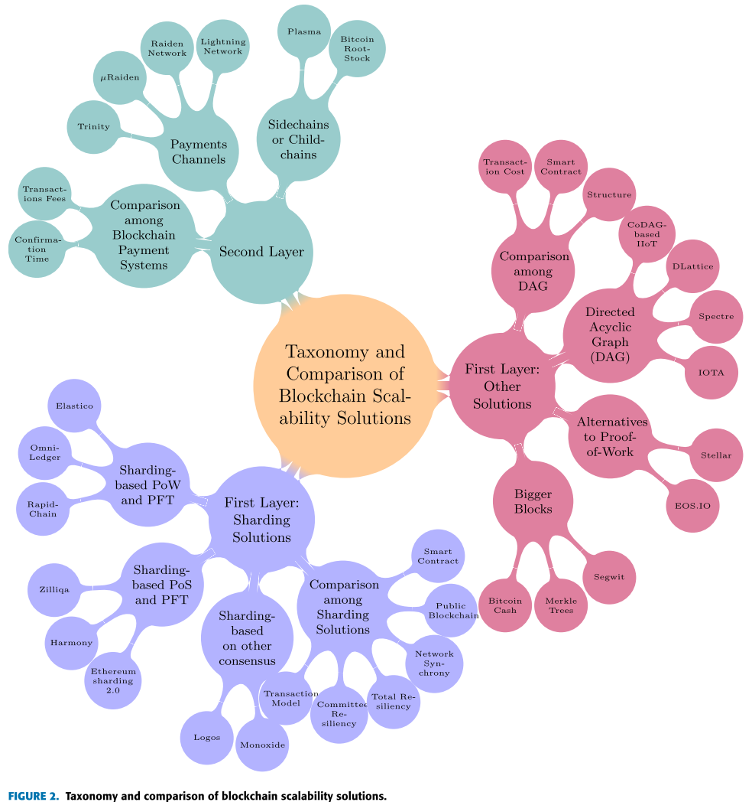

name: inverse layout: true class: center, middle, inverse --- # Report on event-level DP and DP applied to growing Databases .footnote[ This presentation: https://marc-queiroz.github.io/unifil/doctoral-project/slides/latest/index.html ] --- layout: false class: inverse, middle .left-column[ ## Previously ] .right-column[ - What will be protected using DP on Blockchain applied to Sharding? - Use case: Search for a Protocol (Ethereum 2.0 / Zilliqa / Harmony / Dang et al.) to implement a DP algorithm - For qualification: DP can be scaled in Blockchain? - What are the Pros and Consof DP in the context of Sharding? ] .footnote[HASSAN, M. U.; REHMANI, M. H.; CHEN, J. Differential privacy in blockchain technology: A futuristic approach.Journal of Parallel and Distributed Computing] --- --- layout: false class: inverse, middle .left-column[ ## Data blocks ] .right-column[ The integration of DP in blockchain layer based architecture. - Data layer - Network layer - Consensus layer - Incentive layer - Contract layer ] .footnote[HASSAN, M. U.; REHMANI, M. H.; CHEN, J. Differential privacy in blockchain technology: A futuristic approach.Journal of Parallel and Distributed Computing] --- layout: false class: inverse, middle .left-column[ ## Data blocks ] .right-column[ The integration of DP in blockchain layer based architecture. - Application layer ] .footnote[HASSAN, M. U.; REHMANI, M. H.; CHEN, J. Differential privacy in blockchain technology: A futuristic approach.Journal of Parallel and Distributed Computing] --- layout: false class: inverse, middle .left-column[ ## Data blocks ] .right-column[ - Scaling Blockchain - New form of data block generation - Opportunity for DP application - Review the Hafid et al 2020 ] .footnote[Hafid, A., Hafid, A. S., & Samih, M. (2020). Scaling Blockchains: A Comprehensive Survey. IEEE Access, 8, 125244–125262. https://doi.org/10.1109/ACCESS.2020.3007251] --- layout: false class: inverse, middle .left-column[ ## Survey Review ] .right-column[ - First layer solution - Sharding - Bigger Blocks - DAG - Second layer solution - Payment channels - Side chains ] .footnote[Hafid, A., Hafid, A. S., & Samih, M. (2020). Scaling Blockchains: A Comprehensive Survey. IEEE Access, 8, 125244–125262. https://doi.org/10.1109/ACCESS.2020.3007251] --- layout: false class: inverse, middle, top <center>  </center> --- layout: false class: inverse, middle .left-column[ ## Scalability Trilemma ] .right-column[ - Scalability - Security - Decentralization ] .footnote[Hafid, A., Hafid, A. S., & Samih, M. (2020). Scaling Blockchains: A Comprehensive Survey. IEEE Access, 8, 125244–125262. https://doi.org/10.1109/ACCESS.2020.3007251] --- layout: false class: inverse, middle .left-column[ ## Questions ] .right-column[ - How to apply DP in the commmittee? The protocol running in different committe could be async or sync? - Raising the question: How to enable intra communication? - What is the impact in storage, cost and latency when adding privacy solutions to the commmittee? ] --- layout: false class: inverse, middle .left-column[ Some observations ] .right-column[ - IoT has a Federated solution for DP applied to ML, making use of a local BLC. - The parallelism of computations using PIIs could be a challenge to enable protection of privacy. ] --- layout: false class:inverse,center,middle # Obrigado